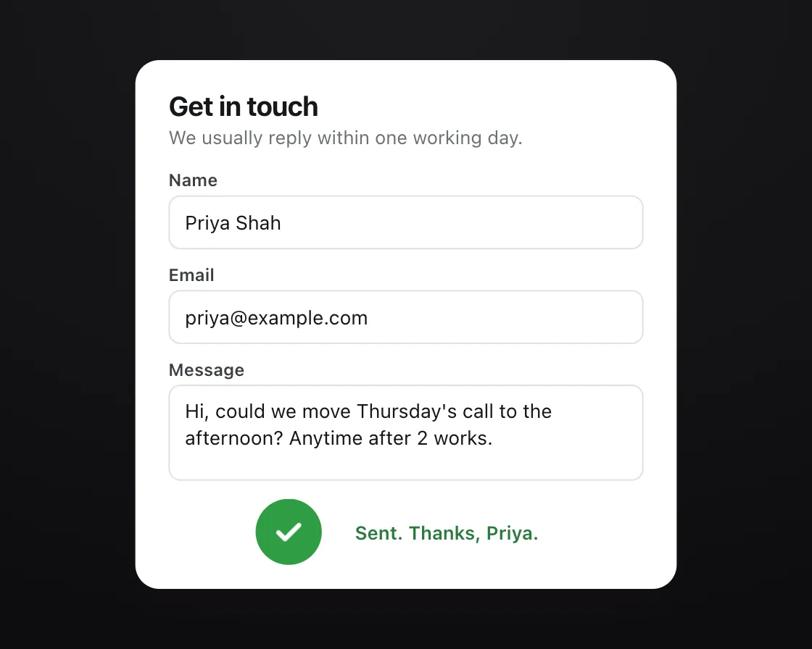

Submit to success
Submit to success is a DOM effect: the button becomes the spinner becomes the tick. One plain JavaScript file with no dependencies; add it with npx motion-library add submit-success.

Open it live, tune it and copy the code
What is Submit to success?
A Send button pinches into a circle, spins while sending, then turns green and draws a tick.
How does Submit to success work?
The pinch is a clip-path inset with a strong ease-out and the tick draws with stroke-dashoffset, so one control shows every state.
How do I add Submit to success to my website?
- In your project folder, run
npx motion-library add submit-success. It writesanimations/submit-success.js. Needs Node 18 or newer. - Import it and call it with a container element that has a size:
import fx from './animations/submit-success.js'; const stop = fx(document.querySelector('#hero')); - Call
stop()to clean up, for example when a component unmounts.
Every setting below is also a flag, so you can install it already tuned: npx motion-library add submit-success --duration 1000.
What settings can I tweak?
| Setting | Flag | Default | Range | Step |
|---|---|---|---|---|
| Morph (ms) | --duration | 400 | 150 to 1000 | 10 |
Specifications
- Renderer
- DOM (CSS and the Web Animations API)
- Category
- Micro & loading
- Dependencies
- None
- File size
- 6.5 KB, unminified
- Interactive
- No: it plays on its own
- Reduced motion
- Respects prefers-reduced-motion
- Licence
- MIT-0: use it anywhere, no credit needed
Source code
// Submit to success on a contact form: the Send button pinches into a circle (clip-path), spins while the message is
// sending, then turns green and draws a tick, and a one-line confirmation fades in under it.
// It feels right because one control shows every state in the place you were already looking, instead of three things swapping in and out.
const PARAMS = { duration: 400 };
export default function (stage) {
const reduce = matchMedia('(prefers-reduced-motion: reduce)').matches;
const W = 540, H = 380;
const root = document.createElement('div');
root.className = 'ss-root';
root.innerHTML = `<style>
.ss-root { position: absolute; inset: 0; overflow: hidden; background: #f4f1f3; font-family: system-ui, -apple-system, "Segoe UI", sans-serif; color: #15171a; }
.ss-scene { position: absolute; left: 0; top: 0; width: ${W}px; height: ${H}px; transform-origin: 0 0; }
.ss-card { position: absolute; left: 90px; right: 90px; top: 14px; bottom: 14px; border-radius: 16px; background: #fff; box-shadow: 0 0 0 1px rgba(20,24,30,.06), 0 10px 30px -12px rgba(60,20,40,.18); padding: 20px 22px; box-sizing: border-box; }
.ss-card h2 { margin: 0; font-size: 18px; font-weight: 700; letter-spacing: -0.02em; } .ss-card > p { margin: 3px 0 14px; font-size: 12.5px; color: #6b7076; }
.ss-f { margin-bottom: 10px; } .ss-f label { display: block; font-size: 11.5px; font-weight: 600; color: #3a3e43; margin-bottom: 4px; }
.ss-in { height: 34px; border-radius: 8px; border: 1px solid #dfe2e6; padding: 0 10px; display: flex; align-items: center; font-size: 13px; }
.ss-in.area { height: 54px; align-items: flex-start; padding-top: 8px; line-height: 1.35; }
.ss-row { display: flex; align-items: center; gap: 14px; margin-top: 12px; }
.ss-btn { position: relative; flex: none; width: 160px; height: 44px; border: 0; padding: 0; background: #d63c74; color: #fff; font: 650 14px system-ui, -apple-system, sans-serif; cursor: pointer; clip-path: inset(0 0 round 22px); }
.ss-btn > * { position: absolute; inset: 0; display: grid; place-items: center; }
.ss-spin, .ss-tick { opacity: 0; }
.ss-spin svg { width: 24px; height: 24px; animation: ${reduce ? 'ss-pulse .8s ease-in-out infinite alternate' : 'ss-rot .8s linear infinite'}; } @keyframes ss-pulse { to { opacity: .4; } } @keyframes ss-rot { to { transform: rotate(360deg); } }
.ss-tick svg { width: 24px; height: 24px; }
.ss-ok { margin-left: -50px; font-size: 12.5px; color: #2b7a3d; font-weight: 600; opacity: 0; }
</style><div class="ss-scene"><div class="ss-card"><h2>Get in touch</h2><p>We usually reply within one working day.</p>
<div class="ss-f"><label>Name</label><div class="ss-in">Priya Shah</div></div>
<div class="ss-f"><label>Email</label><div class="ss-in">priya@example.com</div></div>
<div class="ss-f"><label>Message</label><div class="ss-in area">Hi, could we move Thursday's call to the afternoon? Anytime after 2 works.</div></div>
<div class="ss-row"><button class="ss-btn" type="button"><span class="ss-label">Send message</span><span class="ss-spin"><svg viewBox="0 0 30 30"><circle cx="15" cy="15" r="12" fill="none" stroke="#fff" stroke-width="3.5" stroke-linecap="round" stroke-dasharray="48 100"/></svg></span><span class="ss-tick"><svg viewBox="0 0 28 28"><path d="M6 14.5l5.2 5.2L22 8.8" fill="none" stroke="#fff" stroke-width="3.6" stroke-linecap="round" stroke-linejoin="round"/></svg></span></button><span class="ss-ok">Sent. Thanks, Priya.</span></div>
</div></div>`;
stage.append(root);
const scene = root.querySelector('.ss-scene');
const fit = () => { const w = stage.clientWidth, h = stage.clientHeight, s = Math.min(w / W, h / H, 1.3); scene.style.transform = `translate(${(w - W * s) / 2}px, ${(h - H * s) / 2}px) scale(${s})`; };
const ro = new ResizeObserver(fit); ro.observe(stage); fit();
const btn = root.querySelector('.ss-btn'), label = root.querySelector('.ss-label'), spin = root.querySelector('.ss-spin'), tick = root.querySelector('.ss-tick'), path = tick.querySelector('path'), ok = root.querySelector('.ss-ok');
const len = path.getTotalLength(); path.style.strokeDasharray = len; path.style.strokeDashoffset = len;
const ease = 'cubic-bezier(0.23, 1, 0.32, 1)', D = PARAMS.duration, side = (160 - 44) / 2;
// the button pinches toward its own centre, so the circle stays where the press happened
const anims = new Set();
// reduced motion: no press dip or slide-in, and the spinner pulses instead of turning; the morph to a circle, colour and tick stay
const go = (el, kf, extra = {}) => { const a = el.animate(reduce ? kf.map(({ transform, ...f }) => f) : kf, { duration: D, easing: ease, fill: 'forwards', ...extra }); anims.add(a); };
let timers = [], running = false;
const later = (fn, ms) => timers.push(setTimeout(fn, ms));
function run() {
if (running) return; running = true;
anims.forEach(a => a.cancel()); anims.clear(); timers = [];
go(btn, [{ transform: 'scale(1)' }, { transform: 'scale(0.97)', offset: 0.4 }, { transform: 'scale(1)' }], { duration: 200, fill: 'none' });
go(label, [{ opacity: 1 }, { opacity: 0 }], { duration: D * 0.4 });
go(btn, [{ clipPath: 'inset(0 0 round 22px)' }, { clipPath: `inset(0 ${side}px round 22px)` }]);
go(spin, [{ opacity: 0 }, { opacity: 1 }], { delay: D * 0.6, duration: 200 });
later(() => {
go(spin, [{ opacity: 1 }, { opacity: 0 }], { duration: 150 });
go(btn, [{ background: '#d63c74' }, { background: '#2f9e44' }], { duration: 250 });
go(tick, [{ opacity: 0 }, { opacity: 1 }], { duration: 100 });
go(path, [{ strokeDashoffset: len }, { strokeDashoffset: 0 }], { duration: 380, delay: 80 });
go(ok, [{ opacity: 0, transform: 'translateX(-6px)' }, { opacity: 1, transform: 'none' }], { duration: 260, delay: 200 });
}, D + 1300);
later(() => {
go(tick, [{ opacity: 1 }, { opacity: 0 }], { duration: 200 });
go(ok, [{ opacity: 1 }, { opacity: 0 }], { duration: 200 });
go(btn, [{ clipPath: `inset(0 ${side}px round 22px)`, background: '#2f9e44' }, { clipPath: 'inset(0 0 round 22px)', background: '#d63c74' }]);
go(label, [{ opacity: 0 }, { opacity: 1 }], { delay: D * 0.5, duration: 200 });
}, D + 3300);
later(() => { running = false; }, D * 2 + 3400);
}
btn.addEventListener('click', run);
const first = setTimeout(run, 700);
const loop = setInterval(run, D * 2 + 4600);
return () => { clearTimeout(first); timers.forEach(clearTimeout); clearInterval(loop); anims.forEach(a => a.cancel()); ro.disconnect(); btn.removeEventListener('click', run); root.remove(); };
}